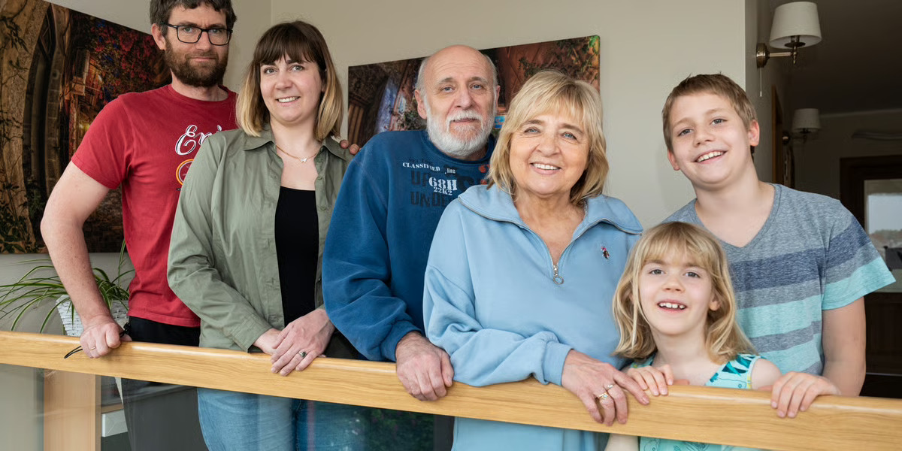
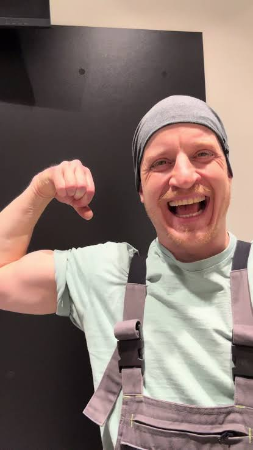
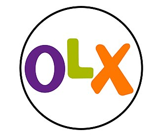

Aktualizacja 2026: nowe pokolenia klientów i szablony komunikacji — North.pl
Rodziny z dziećmi w wieku szkolnym. Wysoki status społeczny, który lubią pokazywać. Prowadzą stabilne, rodzinne życie, ale są bardzo aktywni, zapracowani, zorientowani na sukces. Aktywnie kierują swoim życiem, dom jest tego przykładem — bezpieczna przestrzeń i wyznacznik statusu. Podążają za trendami, chcą być wyjątkowi.
Chcę wiedzieć, że sprzęty można naprawiać — wydaje mi się, że dziś są albo jednorazowe, albo zbyt skomplikowane. Nie mam czasu, żeby dokładać sobie kolejnych obowiązków, ale żyję w zgodzie z naturą i nie chcę, żeby dzieci wychowywały się w morzu plastiku. Fajnie byłoby naprawić coś samemu — zrobić coś dobrego dla środowiska i mieć się czym pochwalić.
Z North.pl dowiesz się, jak samodzielnie naprawiać i dbać o sprzęty — to proste i ekologiczne. Nie musisz wiedzieć jak, damy Ci do tego narzędzia.
Konkretny i oszczędzający czas. Bez zbędnych ozdobników — liczy się efektywność, z lekkim akcentem na ekologię i to, czym można się pochwalić.

2. Złotopolscy secondary target — persona z 2019 r.Prowadzą spokojne i przewidywalne życie, w tradycyjnym modelu rodziny — ze starszymi dziećmi lub z syndromem opuszczonego gniazda. Średnie dochody, skrupulatny budżet domowy. Dom to ich ostoja — ciepło, rodzina, tradycja, wspomnienia. Nie lubią zmian, przywiązują się do rzeczy i sprzętów, zwracają uwagę na cenę.
Chcę, żeby w domu był święty spokój — to moja bezpieczna przestrzeń. Denerwuję się, jak coś się psuje, bo trzeba wzywać fachowca i wydawać pieniądze, a nie daj Boże kupować nowy sprzęt. Nie lubię zmian, jestem przywiązana do moich sprzętów, a na nowy mnie nie stać.
Nie musisz kupować nowego sprzętu, gdy stary się zepsuje — North.pl pokaże Ci, jak prosto możesz samodzielnie coś naprawić, a do tego jeszcze w tym pomoże. Zachowasz ulubiony sprzęt i oszczędzisz pieniądze.
Spokojny, budujący zaufanie, prosty język bez żargonu. Podkreślenie oszczędności i utrzymania status quo, bez pośpiechu.
Młode pary (również z małymi dziećmi), a także single. Ich życie powoli nabiera pierwszych dorosłych ram, ale nadrzędną wartością pozostaje wolność i niezależność. Dom to dla nich oznaka sukcesu. Są otwarci, nadążają za trendami i technologiami, wierzą w siebie, nie lubią przepłacać — są smart shopperami.
Lubię dbać o dom, bo wreszcie mam swoje miejsce. Większość rzeczy zrobiliśmy sami — dzięki temu zaoszczędziliśmy i byliśmy niezależni. A gdy psuje się sprzęt, musimy zdać się na kogoś innego, bo nie wiemy jak go naprawić, a na nowy nas nie stać.
North.pl sprawia, że możesz w całości samodzielnie zadbać o swój dom. Naprawianie domowych sprzętów, nawet tych skomplikowanych, jest proste. Oszczędzasz pieniądze, robisz coś dobrego dla świata i masz satysfakcję z tego, że Ci się udało.
Partnerski, motywujący, nowoczesny — "dasz radę". Oszczędność i niezależność w centrum komunikatu.

4. Złote Rączki grupa dodatkowa — persona z 2019 r.Starsza grupa, najczęściej z dorosłymi dziećmi, zbliżająca się do emerytury. Najważniejsze są tradycyjne wartości, rodzina, zdrowie. Cenią święty spokój, nie chcą zmian. Lubią mieć rację i chcą być potrzebni. Od marki oczekują wiarygodności, profesjonalizmu i dobrego stosunku jakości do ceny.
Chcę się spełnić w czymś, w czym jestem dobry/a — zyskuję tym szacunek najbliższych i sąsiadów. Naprawianie to dla mnie też dodatkowa fucha. Oczywiste jest, że jak coś się psuje, to się naprawia, a nie wyrzuca.
Z North.pl naprawa jest jeszcze prostsza. Dajemy Ci dostęp do wszystkich części zamiennych praktycznie od ręki, a także możliwość skorzystania z naszego wieloletniego doświadczenia i wiedzy.
Rzeczowy, z uznaniem dla doświadczenia i wiedzy klienta — bez pouczania. Podkreślenie dostępności części i wiarygodności marki.
Ur. 1997–2012, dziś 14–29 lat. Pierwsze mieszkanie lub wynajem, w pełni cyfrowi i mobilni — ok. 90% robi zakupy przez telefon. Autentyczność ważniejsza niż perfekcja, wyczuleni na greenwashing. DIY to nie tylko oszczędność, ale styl życia i treść do pokazania (TikTok, Pinterest, Instagram). Kupują z drugiej ręki.
Chcę urządzić i utrzymać swoje pierwsze M bez przepłacania. Naprawię coś sam, zanim kupię nowe — to taniej, bardziej eko i daje satysfakcję (a przy okazji można się tym pochwalić). Ale nie kupię historii o ekologii bez konkretów.
Krótkie, wizualne, autentyczne treści (wideo-poradniki), konkretne liczby o wpływie środowiskowym zamiast ogólników, prosty proces zakupu z telefonu, opinie i social proof zamiast korporacyjnego tonu.
Krótki, bezpośredni, autentyczny — konkret zamiast sloganów. Zwrot na "Ty". Umiarkowane emoji, zero korpo-mowy.
Ur. 2010–2025, dziś do ok. 16 lat. Pierwsze pokolenie w pełni cyfrowe od urodzenia. Zakupy pod wpływem emocji i rekomendacji rówieśników. Oczekują innowacji i personalizacji dwukrotnie częściej niż Zetki. Silnie wpływają na decyzje zakupowe rodziców.
To nie jest dziś samodzielny nabywca części RTV/AGD — ale już współdecyduje w domu, a za 5–8 lat wejdzie na rynek jako w pełni samodzielny konsument. Rodzic potrzebuje praktycznej pomocy; dziecko chce zaangażowania, zabawy i poczucia sprawczości.
Do rodzica: prosty sposób na wspólną, wartościową aktywność z dzieckiem. Do dziecka (tam, gdzie może pojawić się bezpośrednio, np. w komentarzach): prosty, entuzjastyczny język, poczucie sprawczości, zero zbierania danych osobowych.
Uwaga operacyjna: kontakt e-mail/SMS/infolinia trafia zawsze do rodzica lub opiekuna. Komentarze pod treściami wideo to jedyny kanał, w którym Alfy mogą pojawić się bezpośrednio; obowiązują zasady bezpiecznej komunikacji z dziećmi (bez zbierania danych, decyzje zakupowe zawsze do rodzica).
Właściciele i pracownicy serwisów RTV/AGD, warsztatów naprawczych, elektrycy i monterzy. Kupują części regularnie i w większych ilościach, często dla wielu klientów jednocześnie. Cena jednostkowa, dostępność magazynowa i szybkość dostawy liczą się bardziej niż narracja marki.
Potrzebuję znaleźć właściwą część szybko i w dobrej cenie, najlepiej hurtowo. Nie obchodzi mnie opowieść o marce — liczy się dostępność, cena i termin dostawy. Chcę mieć pewność, że mogę zamówić większą ilość i dostać fakturę bez zbędnych formalności.
Mamy dedykowaną ofertę B2B: rabaty ilościowe, szybka dostawa, indywidualny opiekun klienta, łatwe fakturowanie.
Rzeczowy, konkretny, bez emocjonalnej narracji marki — język branżowy, liczby i warunki handlowe na pierwszym miejscu. Uwaga: częściowo pokrywa się z podpersoną „Złote Rączki — Mikroprzedsiębiorca/Fachowiec" — tam gdzie skala zakupów uzasadnia pełną ścieżkę B2B, warto migrować klienta do tego segmentu.
Instytucje finansowane z budżetu publicznego — szkoły, przedszkola, domy kultury, domy opieki, szpitale, urzędy, świetlice. Zakupy z ograniczonej, rocznej puli środków, często wymagają faktury VAT, a przy większych kwotach — zgodności z zasadami zamówień publicznych. Decyzję podejmuje pracownik administracyjny.
Muszę wymienić lub naprawić sprzęt w ramach ograniczonego budżetu placówki, najlepiej jeszcze w tym roku budżetowym. Potrzebuję faktury VAT, a często też formalnej oferty lub wyceny do zatwierdzenia przez dyrekcję czy księgowość.
Wystawiamy faktury VAT, przygotowujemy oferty i wyceny na żądanie, oferujemy elastyczne terminy płatności i wsparcie przy dokumentacji zakupowej — także przy zamówieniach objętych zasadami zamówień publicznych.
Formalny i rzeczowy, zorientowany na dokumentację i zgodność z procedurami zakupowymi instytucji — bez emocjonalnej narracji marki.
Właściciele mieszkań i domów wynajmowanych długoterminowo, a także właściciele i zarządcy apartamentów oraz domków wynajmowanych sezonowo (Airbnb, Booking). Kupują sprzęt nie dla siebie, tylko dla najemcy lub gościa — decyzja czysto ekonomiczna: koszt naprawy vs. wymiana vs. utrata najemcy lub zła opinia online.
Muszę szybko i możliwie tanio naprawić lub wymienić sprzęt w wynajmowanym lokalu, zanim najemca się poskarży albo gość zażąda zwrotu pieniędzy. Przy wynajmie sezonowym liczy się każda godzina.
Ekspresowa dostawa, nawet tego samego dnia, prosta wymiana bez konieczności szukania serwisanta, faktura VAT oraz możliwość zarządzania zamówieniami dla wielu nieruchomości z jednego konta.
Rzeczowy, zorientowany na szybkość i koszt, bez zbędnych emocji.
Starsze osoby, często 75+, które fizycznie lub mentalnie nie są w stanie samodzielnie naprawić sprzętu ani zamówić części online. W odróżnieniu od Złotych Rączek ta grupa potrzebuje pomocy z zewnątrz. Boją się zamawiać przez internet, wolą kontakt telefoniczny lub osobisty.
Coś mi się zepsuło, ale nie wiem, jak to naprawić, i boję się zamawiać przez internet — czy ktoś może mi pomóc od A do Z? Potrzebuję prostego wytłumaczenia, bez trudnych słów.
Zamówienie przez telefon, część i montaż w jednej usłudze, przystępny język bez żargonu, możliwość, by zamówienie w Twoim imieniu złożył ktoś z rodziny.
Bardzo cierpliwy, prosty, bez pośpiechu, z dużym naciskiem na zaufanie i bezpieczeństwo.
Głównie obywatele Ukrainy, ale też innych krajów, mieszkający i pracujący w Polsce, często w wynajmowanych mieszkaniach. Bariera językowa, inne przyzwyczajenia zakupowe (płatność przy odbiorze, BLIK), mniejsza znajomość polskich marek.
Potrzebuję prostego, zrozumiałego opisu produktu i procesu zamówienia — najlepiej w moim języku albo bardzo prostym polskim czy angielskim. Nie znam polskich marek, więc liczą się dla mnie zaufanie i opinie innych.
Strona i obsługa dostępne też po ukraińsku lub angielsku, jasne opisy krok po kroku ze zdjęciami i ikonami, elastyczne metody płatności.
Prosty, bezpośredni język, bez idiomów i żargonu, komunikacja oparta na obrazach i ikonach.

12. Resellerzy / fliperzy sprzętu używanego nowa persona — 2026Osoby kupujące zepsuty lub używany sprzęt (np. z OLX, aukcji), naprawiające go i odsprzedające z zyskiem — rosnący segment gospodarki obiegu zamkniętego. Potrzebują regularnego dostępu do popularnych, tanich części zamiennych.
Kupuję zepsuty sprzęt tanio, naprawiam i sprzedaję z zyskiem — liczy się dla mnie niska cena części i łatwa dostępność, bo pracuję z wieloma modelami naraz.
Szeroki wybór popularnych części w dobrej cenie, możliwość zamówienia kilku różnych części naraz w jednej dostawie, program rabatowy dla stałych klientów.
Rzeczowy, zorientowany na cenę i dostępność, z elementem społeczności i wymiany doświadczeń.
| Persona | Lokalizacja / mieszkanie | Rodzaj sprzętu | Motywacja | DIY | Kanał |
|---|---|---|---|---|---|
| Rodzinka.pl | Duże miasto, dom lub duży apartament | Duże AGD+RTV, premium | Planowana/prewencyjna | Niska–średnia | Mobile+desktop, social |
| Złotopolscy | Mniejsze miasto, dom rodzinny od lat | Starsze duże AGD | Awaryjna | Niska | Desktop, telefon/infolinia |
| Kasia i Tomek | Miasto, wynajem/pierwsze M | Małe AGD, pierwsze wyposażenie | Planowana+awaryjna | Średnia, rosnąca | Mobile-first, marketplace |
| Złote Rączki | Małe miasto/wieś, dom, długoletni | Wszystkie kategorie | Pasja/hobby+awaryjna | Wysoka | Telefon/infolinia, desktop |
| Zetki | Miasto, najem, pierwsze M | Małe AGD, elektronika, z drugiej ręki | Awaryjna+pasja | Średnia, uczą się z wideo | Mobile, social |
| Alfy | Zależna od rodziny | Gadżety, elektronika osobista | Emocjonalna/impulsowa | Bardzo niska, rosnąca | Wideo/social, przez rodzica |
| B2B | Kontekst zawodowy | Wszystkie kategorie, hurt | Zawodowa, regularna | Bardzo wysoka | Konto firmowe, e-mail/telefon |
| Budżetówka | Nie dotyczy — instytucja | Sprzęt instytucjonalny | Planowana, w budżecie rocznym | Nie dotyczy | E-mail/telefon do działu instytucji |
| Wynajmujący/zarządcy | Mieszkania/domy/apartamenty na wynajem | AGD, klimatyzacja, TV | Awaryjna, presja czasu | Zróżnicowana | Desktop/mobile, zamówienia zbiorcze |
| Seniorzy niesamodzielni | Mniejsze miasta/wieś, długoletni | Podstawowe AGD/RTV | Awaryjna, zależna od pomocy | Bardzo niska | Telefon/infolinia niemal wyłącznie |
| Migranci | Miasto, wynajem, krótszy horyzont | Podstawowe AGD/RTV | Awaryjna, ograniczona | Niska–średnia | Mobile, przy odbiorze/BLIK |
| Resellerzy | Bez znaczenia | Szeroki przekrój tanich części | Zawodowa, regularna | Wysoka, praktyczna | Desktop/mobile, wiele części naraz |
Cztery persony bazowe rozbite dodatkowo tam, gdzie różnice są na tyle duże, że mogą uzasadniać osobną komunikację.
Wynajmowane mieszkanie w dużym mieście, mniejsza przestrzeń. Niska skłonność do dużych inwestycji, bo mieszkanie nie jest ich własnością. Implikacja: komunikacja skupiona na małych, tanich częściach i szybkich naprawach — unikać komunikatów o dużych inwestycjach.
Młoda para w pierwszym własnym mieszkaniu/domu, często w mniejszej miejscowości. Wyższa skłonność do większych napraw i inwestycji. Implikacja: można komunikować większe projekty (kuchnia, pralnia), pakiety części, treści „urządź swoje pierwsze M".
Rodzina w domu jednorodzinnym z ogrodem — więcej sprzętu (w tym ogrodowego) i większy budżet. Implikacja: rozszerzyć komunikację o sprzęt ogrodowy i potrzeby sezonowe (wiosna/jesień) oraz cross-selling.
Rodzina w apartamencie w mieście, mniej przestrzeni, większa skłonność do zlecania napraw na zewnątrz. Implikacja: rozważyć ofertę „część + montaż" lub współpracę z serwisantami, nie tylko sprzedaż części.
Aktywna/y w social media, traktuje naprawę jako treść i element tożsamości. Naprawia nawet wtedy, gdy nie musi. Implikacja: zaprosić do współpracy (UGC, ambasadorzy), programy poleceń, treści „pokaż swoją naprawę".
Mniej czasu i chęci na eksperymenty, motywacja czysto awaryjna. Implikacja: potrzebna krótka ścieżka „sprawdź w 30 sekund, czy nadaje się do samodzielnej naprawy" plus alternatywa serwisowa.
Naprawia dla siebie, rodziny i sąsiadów, traktuje to jako hobby i źródło uznania. Implikacja: program lojalnościowy i treści doceniające jego wiedzę (możliwość dzielenia się poradami z innymi).
Naprawia odpłatnie dla innych jako dodatkowe źródło dochodu. To właściwie segment B2B/B2B2C. Implikacja: dedykowana ścieżka — konto biznesowe, rabaty ilościowe, szybsza dostawa, potencjalnie osobny lejek sprzedażowy.